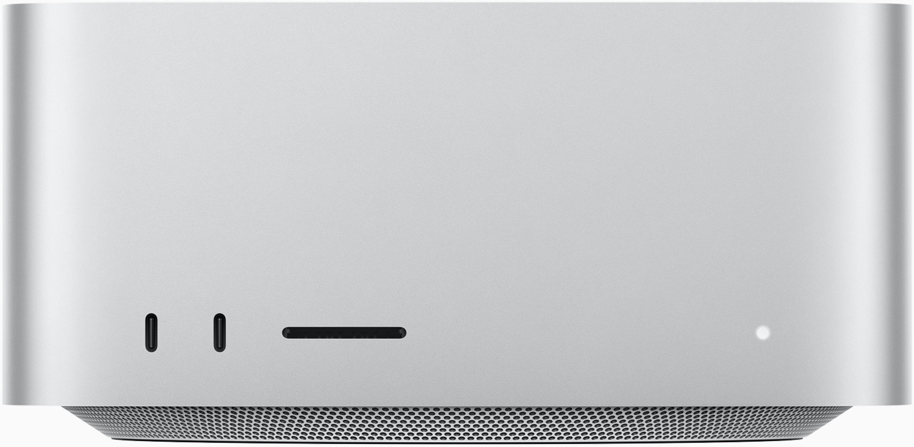
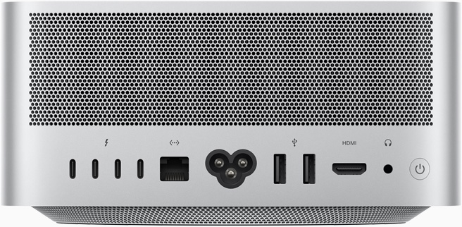

Explore larger models.
Use higher memory tiers for larger quantized models or longer contexts. Actual fit depends on model architecture, precision, runtime overhead, and cache size.
MLX · llama.cpp · OllamaRent a Mac Studio M5 Ultra with the memory your work demands. From 64GB to 512GB unified RAM, get dedicated Apple silicon for AI experiments, development, and ambitious builds.

Mac Studio enclosure shown • exact rental configuration confirmed by quote
One unified memory pool brings your CPU and GPU into the same workspace. Choose capacity for your model weights, context, caches, and the tools running alongside them.
Compare all four configurations ↗Specifications above describe the requested rental range. Exact CPU, GPU, memory, storage, software image, and availability are confirmed before a booking is accepted.

Product photography: Apple Mac Studio. Enclosure and ports shown for illustration; the booked configuration is confirmed in your quote.
Apple-native tools, open model experiments, and macOS development — on a machine reserved for your workload.
Use higher memory tiers for larger quantized models or longer contexts. Actual fit depends on model architecture, precision, runtime overhead, and cache size.
MLX · llama.cpp · OllamaCompile Swift projects, test Apple-platform applications, and explore Core ML conversion. Confirm Xcode, signing, and desktop requirements before reserving.
Swift · Xcode · Core MLPrototype retrieval pipelines, evaluate models, or run several services side by side. Match the memory tier to the full working set rather than model weights alone.
Agents · RAG · EvaluationApple silicon uses Metal and Apple-native acceleration. CUDA-only packages and NVIDIA-specific kernels require a different platform. Benchmark your workload before a longer reservation.
Start with an hourly rental or reserve a month and save 15%.
USD. Monthly prices use 730 hours × hourly rate × 0.85. A monthly reservation is a fixed quoted period; unused hours do not reduce its price. Taxes, storage upgrades, and any additional charges are confirmed in the quote. The 64GB rate is provisional, based on the 96GB rate scaled by memory capacity.
Compare your expected runtime with a full monthly reservation.
Save $383.25 against 730 hourly hours.
A practical starting point for remote Apple compute. Your connection details and machine-specific instructions arrive with the booking.
Choose a RAM tier, hourly or monthly rental, preferred start date, and SSD capacity. Include any required applications or desktop access. Hoflings confirms availability, hardware, access permissions, and final pricing before you commit.
Generate an SSH key on your computer if you do not already have one. Share only the public key when requested. Use the username, hostname, and port supplied in your rental instructions.
ssh -p PORT USER@HOSTReplace PORT, USER, and HOST with your issued details. Verify the host fingerprint through your onboarding instructions before connecting.
Confirm the installed macOS version and available tools. A user-space Python environment keeps project dependencies isolated. Tool installation, administrative access, and preinstalled packages depend on the agreed machine image.
sw_vers
system_profiler SPHardwareDataType
python3 -m venv ~/venvs/project
source ~/venvs/project/bin/activate
python -m pip install --upgrade pipFor compatible Apple-silicon workflows, consult the official MLX documentation ↗ and llama.cpp project ↗. Check package support for your macOS and chip before installing.
Use SCP or SFTP with your issued SSH credentials. Keep an independent backup of code, datasets, and outputs. Confirm storage persistence, retention, and removal procedures in your rental agreement, and export your files before the rental ends.
Still have a workload question?
Talk it through with us ↗A dedicated remote Mac Studio for the agreed rental period. Select a memory tier and request a quote; we confirm the exact hardware, availability, storage, and access arrangements before accepting the booking.
Monthly pricing is the hourly rate multiplied by 730 hours, then reduced by 15%. That gives $1,241 for 96GB, $2,171.75 for 256GB, and $4,343.50 for 512GB. The provisional 64GB plan is $825.27. Monthly reservations are quoted as a fixed period.
Count model weights, runtime memory, context cache, datasets, and background processes. The 64GB and 96GB tiers suit lighter working sets; 256GB and 512GB provide more capacity for larger experiments. A model's parameter count alone does not establish whether it will fit or how quickly it will run.
CUDA requires NVIDIA hardware. Use Apple-silicon-compatible software such as MLX, Metal-enabled llama.cpp, or supported PyTorch MPS operations. Check your dependencies for unsupported operations and CPU fallbacks.
SSH is the primary access method. Request Screen Sharing or another desktop workflow if needed. Account permissions and any administrator-assisted setup are agreed before the rental starts.
The installed image is confirmed with your quote. Tell us if you need Xcode tools, Python, Homebrew, MLX, Ollama, llama.cpp, or PyTorch. This page does not guarantee that every tool is preinstalled on every machine.
Request 4TB or a larger SSD when booking. Available capacity, usable free space, upgrade pricing, and persistence are confirmed for the selected machine. Keep a separate backup of any irreplaceable data.
Bookings are handled by quote rather than instant provisioning. Submit your preferred configuration and schedule; the team will confirm availability and send the rental details. No payment is collected on this page.
Tell us what you want to run. We’ll help scope the machine, storage, and rental period.
Visit Hoflings contact ↗